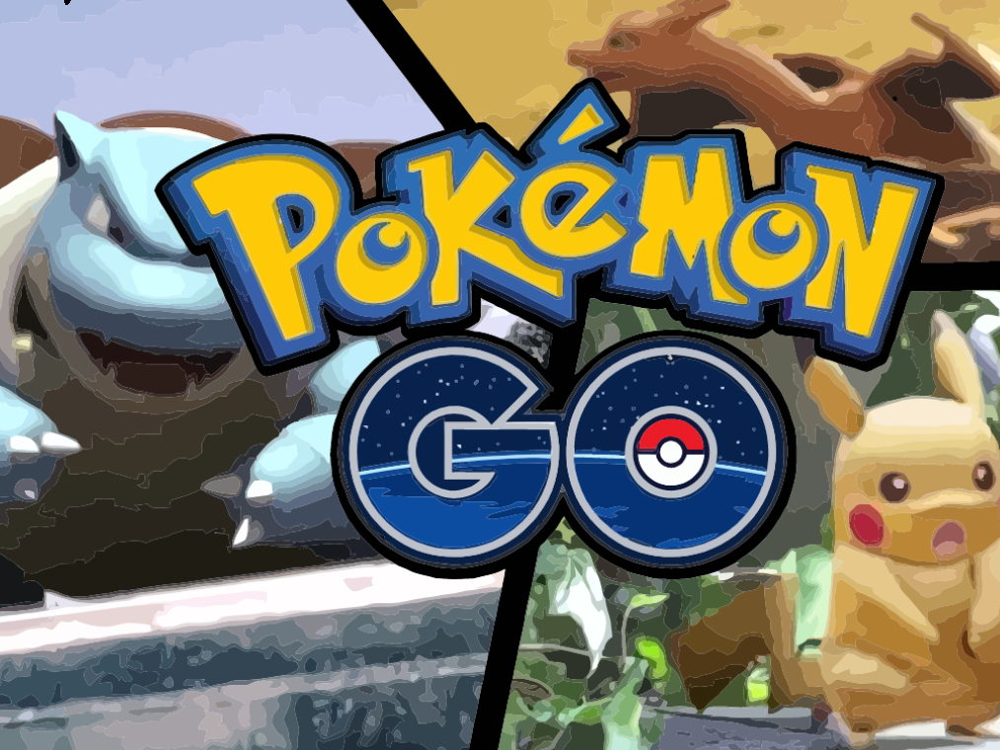
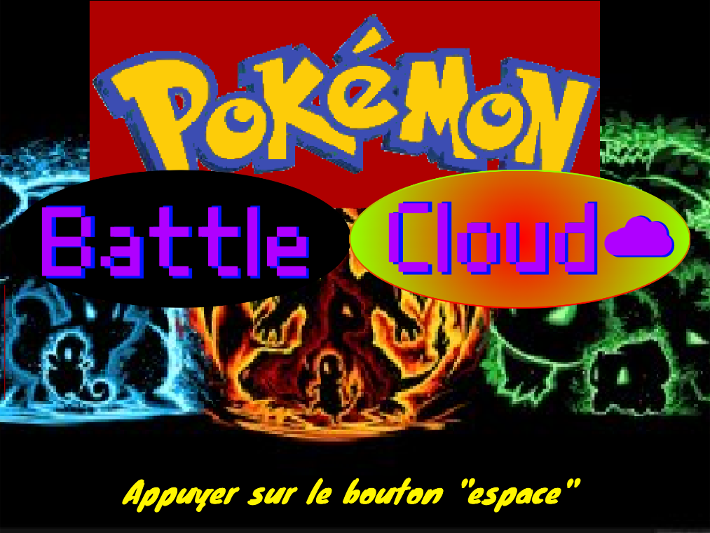
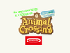
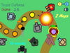
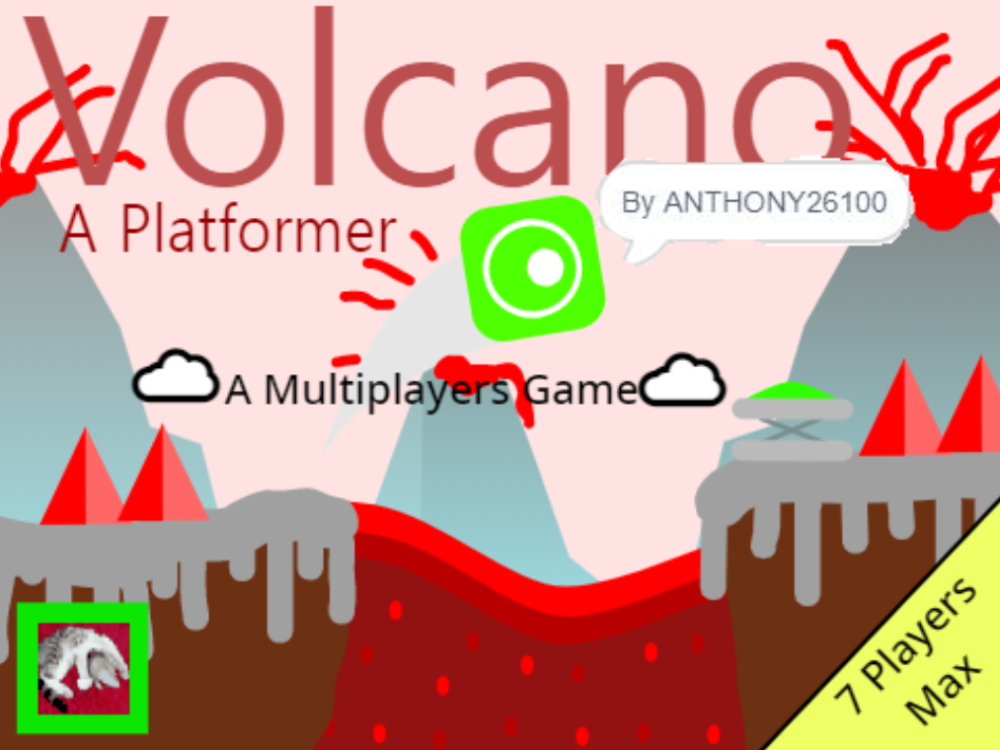

🔢 Scratch
Voici mes différents projets Scratch
FootBall
Casse Brique V |||

Casse Brique V ||| est un jeux de casse-brique avec différentes dificultés et différents niveaux à éssayer
Pokemon Go

Pokemon GO est un peu comme le vrai jeux mais avec une seule petite map, une arène et quelques pokemons
Pokemon Batle

Pokemon Batle est la version amélioré du Pokemon Batle qui n'avait que quelques pokemons, certains bug et qui se joué à 2, alors que la nouvelle version se joue en multijoueur
Animal Crossing

Animal Crossing est un jeux qui à eu un grand succé durant 1 mois, ce jeux permet de créer son personnage est de joué des une petite ville avec quelques fonctionnalités
Tower Game Deffence

Tower Défense Game 2.5 est un mini-jeux de défence avec des tours, plus le niveaux est compliqué, plus les tours serons utiles
Volcano Platformer
